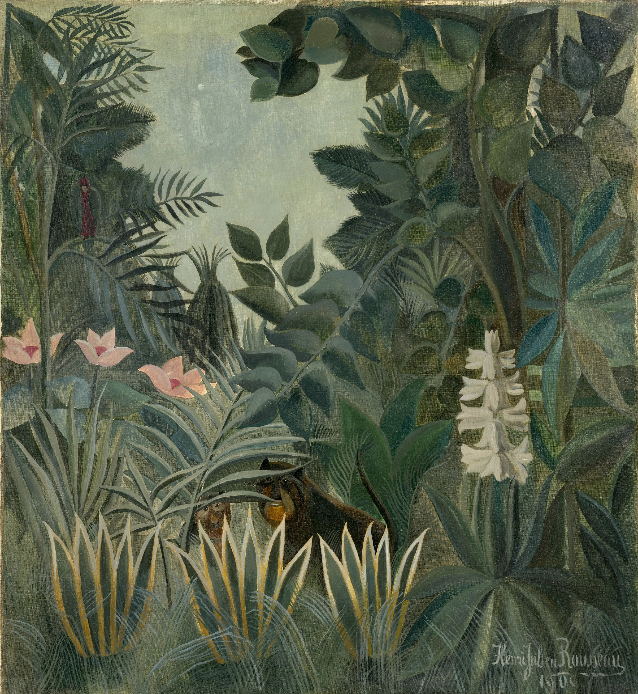

Under the canopy
In a lowland forest almost none of the rain reaches the ground the way it fell. The crowns take it first. A drop that strikes the canopy forty metres up is caught, gathered with others, let go and caught again, and what comes down into the understorey arrives as fewer and heavier drops, falling from leaf to leaf like water down a flight of steps. Botanists call it throughfall. Stand in it during a downpour and what you hear is not rain so much as leaves being struck, thousands of small blows a second, each one bending a blade that springs back and sheds what it was given.

Then the sky stops, and the forest goes on raining. For half an hour, sometimes an hour, the canopy drains through itself: water gathers at the end of a leaf high up, lets go, lands on another leaf, runs down its middle and gathers again at its point. You can stand at the edge of a clearing in sunshine and hear the trees behind you still dripping, slower and slower, until a last drop falls somewhere you cannot see.
Look closely at the leaves of the shrubs down there and a great many of them end the same way, in a long, narrow, pointed tail. Botanists have called it a drip tip since the 1890s, and the reason they give is the one you can watch: the water runs along the midrib to the point and is shed there in small, quick drops, a hundredth of a millilitre or so, instead of lying on the blade in a film that would feed moss and lichen and fungus and keep the leaf from breathing. When the tips were snipped off living leaves, the leaves drained markedly slower. A blunt leaf holds a pool at its end and lets it go rarely, all at once.
Henri Rousseau painted some two dozen jungles and never saw one. He never left France. He spent most of his working life as a clerk in the Paris toll service, and he painted his forests from the glasshouses of the Jardin des Plantes, from the menagerie beside them, from the stuffed animals in the natural history galleries and from the plates of popular picture books, enlarging a single leaf to the height of a man. When he walked into the hothouses, he told a journalist, among those strange plants from distant countries it seemed to him that he was entering a dream. His leaves are flat, one shape of one green, laid edge to edge with the next, which is what makes them easy to cut out, and not hard to imagine wet.